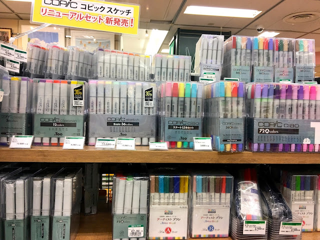

Tools corporation (en Shibuya)
Tools corporation es una tienda de articulos de arte, donde vas a encontrar desde marcadores hasta el famoso papel para manga! y lo mejor de todo tiene compras libres de impuestos para extranjeros.
Harajuku Takeshita street
En esta calle vas a encontrar desde la moda mas extravagante hasta los postres mas kawaii que te hayas imaginado.